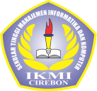

|  | Sekolah Tinggi Managemen Informatika Dan Komputer | Alamat Kampus | ||||
| STMIK | IKMI | Jl. Perjuangan No.10B Majasem | ||||
| Kec. Kesambi Kota Cirebon | ||||||
| Cirebon | Telp. 0231-490480-490481 | |||||
| Websaite : https://ikmi.ac.id/ | Email : info@ikmi.ac.id | |||||
| SK. MENRISTEKDIKTI NO.1/KPT/I/2015 | TERAKREDITASI BAN-PT | |||||